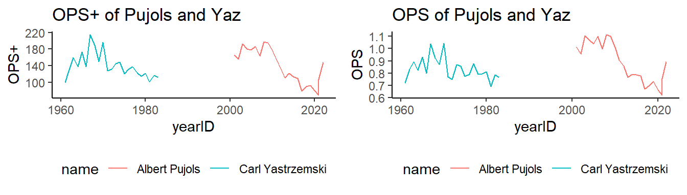
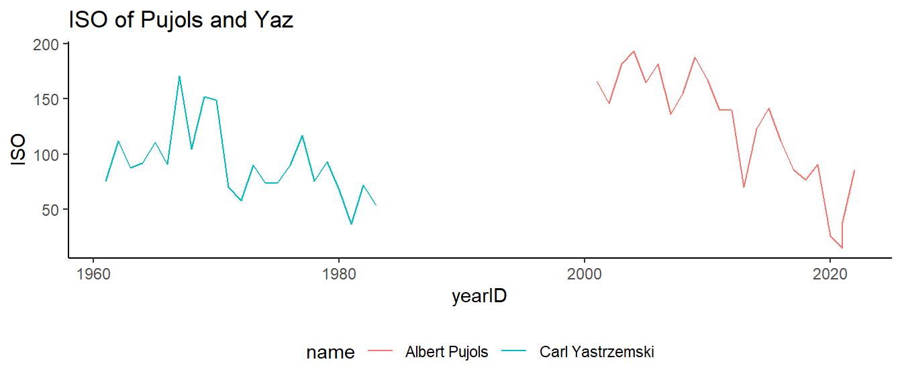

If Aaron Judge had the same number of plate appearances (\(newPA = 5886\)) as J.D. Martinez, how many career home runs would Aaron Judge have with \(kicker = 1.05\)?
Carl Yastrzemski (“Yaz”) played his entire 23-year career (1961-1983) with the Boston Red Sox. Using the similar function of Chapter 8, here are six players with similar career statistics as Yaz.
yearly_stats |>left_join(lg_stats, by =c("yearID","lgID")) -> yearly_stats# Calculate OPS+yearly_stats |>mutate(OPS_plus =100* ((OBP/OBP_lg + SLG/SLG_lg) -1)) -> yearly_statslibrary(gridExtra)p1 = yearly_stats |>ggplot(aes(x = yearID, y = OPS_plus, color = name)) +geom_line() +theme_classic() +labs(y ="OPS+", title ="OPS+ of Pujols and Yaz") +theme(legend.position ="bottom")p2 = yearly_stats |>ggplot(aes(x = yearID, y = OPS, color = name)) +geom_line() +theme_classic() +labs("OPS", title ="OPS of Pujols and Yaz") +theme(legend.position ="bottom")grid.arrange(p1, p2, ncol =2)

What are some limitations of OPS+?
Isolated Power
Isolated Power (ISO) is a statistic that communicates a hitter’s extra bases per at-bat. Batters can provide similar offensive value with very different ISO, meaning ISO helps us understand what kind of hitter a player is more than as a standalone measure of value.
ISO is useful because two players with identical batting averages can be having very different seasons, and two players with the same slugging percentages can be having very different seasons – even if you hold walks, plate appearances, park effects, and luck constant.
Lets take a look at ISO for Albert Pujols and Yaz.
yearly_stats |>mutate(ISO = X2B +2* X3B +3* HR) |>ggplot(aes(x = yearID, y = ISO, color = name)) +geom_line() +theme_classic() +labs(title ="ISO of Pujols and Yaz")+theme(legend.position ="bottom")

BABIP (Batting Average on Balls in Play)
Why might this be an interesting metric?
What is an advantage of this metric over most others? (Hint: what players does it count for?)
BABIP Formula
\[
BABIP = \frac{H - HR}{AB - SO - HR + SF}
\]
Daniel Murphy Offensive Statistics (Through 2016)
The table below shows Daniel Murphy’s offensive statistics for selected seasons. Note that Murphy did not play in 2010.
Year
AB
H
HR
SF
SO
2008
131
41
2
1
28
2009
508
135
12
6
69
2011
391
125
6
2
42
2012
571
166
6
4
82
2013
658
188
13
5
95
2014
596
172
9
5
86
2015
499
140
14
6
38
2016
531
184
25
8
57
Calculate Murphy’s BABIP in 2009
What does that communicate to us? Who do we compare it to?